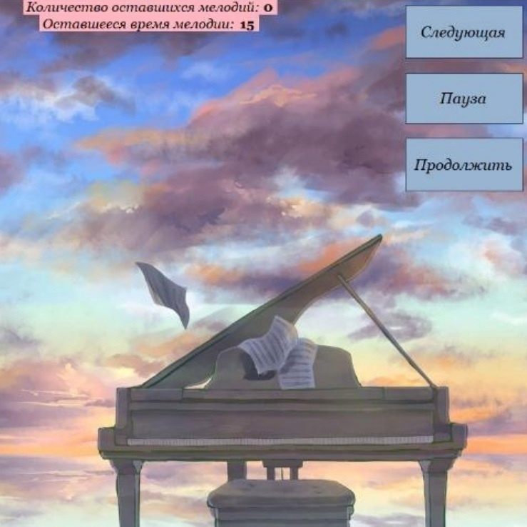
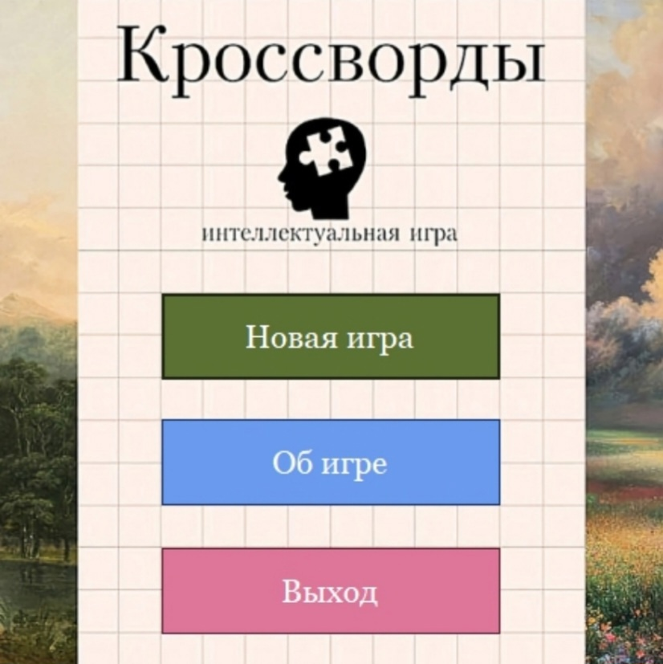
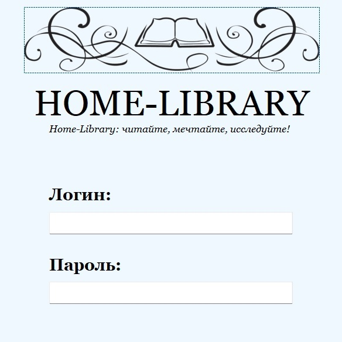

Home Library (C#, MySQL)
Использованные ресурсы: MS Visual Studio, HeidiSQL
Описание: программа для ведения домашней библиотеки с защищенным входом: пользователь работает с базой данных через удобный интерфейс, позволяющий взаимодействовать с тремя таблицами (книги, авторы, жанры), а именно добавлять, изменять, удалять данные, осуществлять поиск по ключевому слову и устанавливать фильтр поиска.
Дата разработки: декабрь 2024 года.
Кроссворды (C#)
Использованные ресурсы: MS Visual Studio
Описание: программа для игры в кроссворд: пользователь имеет возможность загрузить свой собственный кроссворд, оформленный в текстовом файле по заданным разработчиком стандартам, и заполнять его по тем же правилам, что и классический бумажный кроссворд - в окне будут отображены подсказки, правильность и неправильность заполнения ячеек и др.
Дата разработки: май 2024 года.
Guess The Melody (C#)
Использованные ресурсы: MS Visual Studio
Описание: программа для музыкального состязания: два игрока проверяют свои знания в сфере музыки - победителем станет тот пользователь, который отгадает как можно большее количество песен за заданное в игровых настройках время.
Дата разработки: декабрь 2023 года.